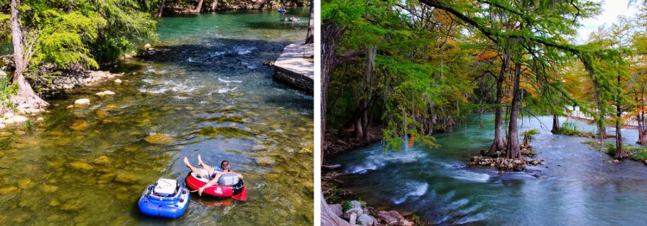

10 Best Campgrounds Along The Guadalupe River In Texas
The Guadalupe River starts near somewhere known as Kerrville that is located in Texas Hill Country and streams for about 225 miles southeast until it empties into the San Antonio Bay. This is located on the Gulf of Mexico. There are many campgrounds that lie along the riverbank with simple access for activities like canoeing, tubing and kayaking, and fishing for some great trout and bass.
Below is a list of some of the best campgrounds to stay along or close to the Guadalupe river in Texas.
Cave without a name
- Cave Tour
- Hopping Rocks
- Labyrinth available
- Cut a Geode
- Gemstone / Fossil Sluice
- Trail Walking
- Nature Spotting
- Nature Oriented Gift Shop
Potters Creek Park
- Walk in
- Drive in
- Boat in
- Drinking Water
- Electric Hookups
- Fires Allowed
- No Firewood available
- ADA Accessible
- Pets Allowed
- Phone Service
- Picnic
- reservable
- No Market
- Toilets
- Trash Available
- WiFi
- Showers
- 30 amp hookups
- Sewer hookups
- Sanitary Dump
- Water Hookups
- 50 amp Hookups
Victoria Riverside City Park
- 30 Amp
- 50 Amp
- 20 Amp
- sewer
- water
- Full Hookups
Guadalupe River State Park
Lake Wood Recreation Area
- Back-in; any size trailer
- 16 full hook-up RV sites
- Water
- Sewer
- 30-amp electrical service
- Shower building with hot water
- Restrooms
- Children's playground
River Ranch RV Resort
Kerrville-Schreiner Park
CALHOUN’S RIVERSIDE RV RETREAT
- Boat Ramp
- Bird Watching
- Canoeing
- Boating
- Fishing
- Kayaking
- Covered Pavilion
- Waterfront
- Tents
- Large Shaded Lots
- Rec Hall
- Cabins
- Colony Creek Golf Club
- Aransas National Wildlife Refuge
- Matagorda Island State Park
- El Camino Real De Los Tejas Natural History Museum
- Port Lavaca
- Museum of the Coastal Bend
- Riverside Park & Rose Garden
- Texas Travel - Victoria
- Riverside Golf Course
- The Texas Zoo
- Victoria Historic District
- The La Salle Odyssey
- Whooping Crane Tours
- Victoria Symphony
Lost Woods Campground
- Toilets available
- Campfires allowed
- Pets allowed
Turkey Sink Campground
- Hiking
- Biking
- Fishing
- Paddling
- Horseback Riding
- Swimming
- Wildlife Watching
Whether you are a bird watcher, a trails explorer, an enthusiastic stargazer, or simply searching for a beautiful place to rest, this is the place for you.
There are many tents and rv sites available that are equipped with 30 amp and 50 amp power. There are also primitive campsites available that do not offer potable water. This is a great location to bring out any type of group to impress them as there is a Pavilion available for groups.
Activities availableWhat about pricing?
| Rate | Adults | Children (ages 6 through 12) | Children Under 6 |
| Standard | $20.00 | $10.00 | Free of charge! |
| Military / Senior | $18.00 | $9.00 | Free of charge! |
| Group Rates (12 or more)* | $15.00 | $8.25 | Free of charge! |
What about Special School Group Tour Rates
| Grade | Price |
| Pre K to Grade 5 | $7.00 |
| Grade 6 to 8 | $8.25 |
| Grade 9 to 12 | $9.75 |
| Teachers (one free per class) | Free of charge! |
| Accompanying Adult | $15.00 |
Map of cave without a name location

Visitors take pleasure in pertaining to Canyon Lake for swimming, boating and fishing. The Guadalupe River is a terrific place for tubing, canoeing, tubing and kayaking. Both the river and lake are stocked with a range of fish for each environment including different catfish, bass or river trout. Hiking, cycling, birding, horseback riding, and wildlife watching are very popular activities in the area. There are 5 trails offered at different areas around the lake. There is a horse trail, a mountain biking trail and several foot tracks. You must bring all your own gear as you will not be able to rent items from the park.
Access AvailableFeatures Available
There are a total of 132 sites available and the price range for each night is going to be $24 to $100.

Located amongst tall pine trees, this location is equipped with showers, electrical hook-ups and a dump station if you need one, and is one of the only riverbank center of its kind to be located on the lower area of the Wisconsin river.
There are a total of 18 sites that are situated on gravel. The cost to stay here starts at $12 per night. It’s home to many different attractions including a golf course, an RV park, a riverside stadium, trails, the Texas Zoo, a rose garden, a boat ramp and many more.
Hookups
The Guadalupe River State Park has 85 different campsites that offer water and electric hookups. It also has 9 walk-in tents. While you are here, you can go swimming, fishing, canoeing, and tubing. There is over 13 miles of trail for you to hike and bike or just going for a short stroll. Some of the trails are also available to horseback riding. Horseback riding is fun here, i have personally experienced it and i have to say it is something to do over and over again.
Many people come here to just paddle along the river. Sadly i'm not a good swimmer so i try to avoid anything that has to do with the water. I will work on learning to swim over the coming summer months.

The Lake wood recreational area is located on approximately 5 acres of scenic land. The park has many facilities available such as a children's playground, full rv hook-ups, tent camping areas, and picnic sites. You can get the necessities you are missing from the park store or get your permit for camping or just a day pass.
Hookups Available
There are a total of 53 sites at sites at this resort that each offers their own amenities. The different rv sites are as follows: under 20', Greenbelt, select, Pull-Thru, premium, riverfront. The River Ranch Rv Resort is open year round and also offers many different rates. These rates can be seen in the table below.
| Site | Cost per day | Cost per week |
|---|---|---|
| Select | $45 | $270 |
| Greenbelt | $55 | $330 |
| Pull Thru | $65 | $390 |
| Premium | $65 | $390 |
| Riverfront | $75 | $450 |
The resort is pet friendly but all dogs must be on a leash if they are not in the dog park.

This city park provides a variety of fun camping choices such as 50 and 30 amp Recreational Vehicle sites, cabins, tent camping and there is even a ranch House. Facilities include the Leisure Hall, Dining Hall, and day utilize centers including a play ground, volleyball, butterfly garden, basketball, over 10 miles of hiking and biking trails, access to the river, kayaking, canoe rentals. This is also the largest local park in Kerrville.
Campsite prices
There are many different priced campsites available. Here are the prices below.
| Type of site | Facilities Available | Prices |
|---|---|---|
| 30 am hook-up | Electric and water only | $25 daily |
| 30 amp Full hook-up | Electric , water, and sewer | $30 daily |
| 50 amp Full hook-up | Electric, water, and sewer | $35 daily |
| Tent Sites | - | $20 daily |

The Calhoun's Riverside RV Retreat features a personal boat ramp, cordless Web gain access to, showers and bathrooms, and many 30/50 amp Recreational Vehicle areas. Sportspersons and Winter Texans will take pleasure in the access to hunting, fishing and simply relaxing on the riverfront where there are acres stunning oak trees.
Amenities Available
This campground allows up to 220 guests per site across 50 acres of woods. You can watch the wildlife such as squirrels, deer, or roadrunners! There are a total of 13 sites and they all have potable water. This is very important just in case you run out of water while staying here.
Staying here is very affordable as it only cost $30 per night for 4 guests. With 20 guests, you would have to pay $190. With 20 guests, each guest would pay $9.50 per night. That is a great deal.
What are some essentials?
The Turkey Sink Campground has that home away fromm home feeling to it. There are a total of 48 sites available and you will feel quite at home in any of them. You will get electric hook ups and water hookups, grill or fire ring and also picnic tables at your disposal. There is plenty of room to set up all you need outside of your tent or camper.
This campground has trails that gives access to the river which in turn offers many activities.
Activities available or close byCan I float the Guadalupe River right now?
Yes, you can float the Guadalupe River. The exit and entrance access points are open daily from 6 a.m. to 12 midnight.
ConclusionSo what is the most popular campground in Texas? Some say it is the Guadalupe Ricer State Park, while some say it is the Kerrville-Schreiner Park. But, the more people you ask, the more campgrounds you will hear about. It is up to you as an adventurer to go out and experience as many of these parks as possible. Guadalupe Texas has so much to offer on its riverside.